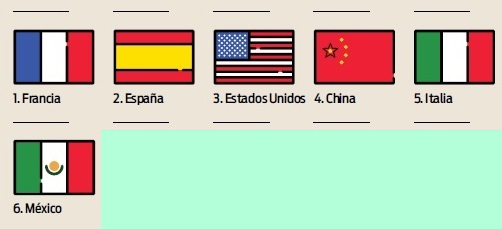

La evolución de la tecnología, la mejora de las infraestructuras y el abaratamiento de costes hace que cada vez más seres humanos puedan viajar con más frecuencia y más lejos. El último informe de la Organización Mundial del Turismo (UNWTO por sus siglas en inglés) emitido en noviembre de 2019 refrenda este ambiente positivo para una de las actividades que más nos hace crecer como persona, viajar. Los países más visitados son Francia, España y Estados Unidos, con entre 80 y 90 millones de turistas internacionales; seguidos de China e Italia, con más de 60; a los que siguen ya a mayor distancia Turquía o México en el rango de los 40-50 millones.
Viajando se accede a culturas que no son como la tuya, a monumentos que no se parecen a los que conoces, a gastronomías que llevan a tu plato productos y sabores que no te imaginas. Pero, sobre todo, viajando se conoce a gente que vive en circunstancias y sociedades distintas y que, si estás predispuesto a hacerlo, es más que probable que te hagan reflexionar sobre las tuyas.Viajar enriquece y, a juzgar por este informe de la Organización Mundial del Turismo, cada vez somos más las personas más "ricas". Nueve años continuados de crecimiento turístico se traducen en que 1.401 millones de personas viajaron a otro país en 2018, un 4% más que en el año anterior. El mayor incremento porcentual, un 7%, se produjo en destinos de África, Asia y el Pacífico aunque el mayor incremento en número de personas, 710 millones más, fue en Europa. El turismo ha sido un sector en auge durante las últimas décadas. Más de 1.100 millones de personas realizan turismo internacional cada año, la mitad en Europa. A favor del viejo continente juega un espacio de libre circulación de personas, una extendida moneda común y un entorno político fragmentado con muchos Estados pequeños y medianos, además de una amplia riqueza patrimonial y playas y buen clima en el sur. De todos modos en el listado de países más visitados también entran Estados Unidos y varios Estados asiáticos. El rápido crecimiento del turismo en el mundo, unido a la concentración de los turistas en destinos muy concretos, también ha tenido consecuencias negativas como la gentrificación. Finalizando, en un mundo globalizado, cada vez son más los viajeros que eligen destinos internacionales para sus vacaciones.